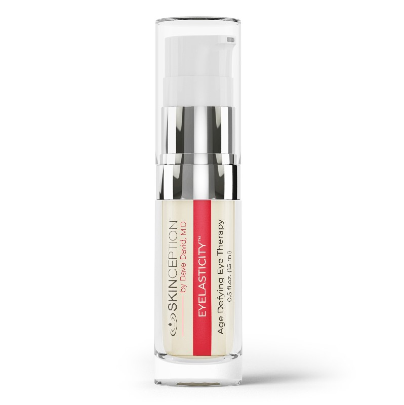
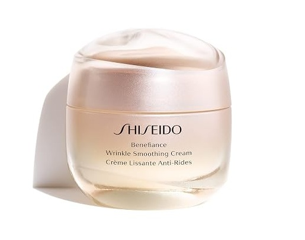

Eyelasticity™ Testbericht: Tränensäcke Entwässern und Augenringe Aufhellen Ohne OP
Von der Derm Audit Redaktion • Aktualisiert September 2026 • 6 Min Lesezeit


Hauchdünne Haut lässt sauerstoffarmes Blut und ausgetretene Gewebsflüssigkeit dunkel durchscheinen.
Eyeseryl® leitet gestaute Lymphflüssigkeit ab, während Regu-Age undichte Kapillarwände abdichtet.
Bis zu 70% weniger Tränensäcke in 15 Tagen; sichtbare Aufhellung vaskulärer Augenringe.
Kompakte Zusammenfassung: Eyelasticity™ setzt an den vaskulären und lymphatischen Ursachen der periorbitalen Hautalterung an, anstatt lediglich temporäre Oberflächenspanner zu nutzen. Die Kombination aus Eyeseryl®-Tetrapeptid und Regu®-Age stärkt brüchige Mikrokapillaren und leitet gestaute Gewebsflüssigkeit ab.
Warum Altert die Haut Unter den Augen Zuerst?
Berühren Sie Ihre Wange. Diese Haut ist dick, robust und widerstandsfähig wie fester Karton.
Berühren Sie nun die Haut direkt unter dem Unterlid. Diese Haut ist völlig anders: Sie ist nur 0,5 Millimeter dick – so dünn wie feuchtes Seidenpapier, ohne schützendes Fettpolster darunter.
Direkt hinter dieser zarten Schicht liegt ein Geflecht feiner Kapillaren. Bei Müdigkeit oder Stress verlangsamt sich der Blutfluss. Sauerstoffarmes, dunkles Blut staut sich. Hinter der papierdünnen Haut schimmert dieses Blut als bläulich-violetter Schatten durch: Das ist die Ursache von Augenringen.
🚨 Der Fehler Schwerer Nachtcremes (Milien-Zysten):
Viele Menschen nutzen schwere, fettige Cremes gegen Tränensäcke. Ein fataler Fehler: Mineralöle und Paraffine verstopfen die feinen Mikroporen. Talg und Keratin stauen sich und bilden harte weiße Körnchen – sogenannte Milien. Tragen Sie niemals schwere Fettcremes an der Augenpartie auf!
Die Wissenschaft Hinter Tränensäcken: Das Undichte Schlauch-Problem
Warum schwellen Tränensäcke morgens besonders stark an?
Stellen Sie sich die feinen Kapillaren wie mikroskopische Gartenschläuche vor. Mit den Jahren werden deren Wände porös. Wasser und Lymphflüssigkeit treten durch winzige Risse ins Gewebe aus.
Beim flachen Liegen im Schlaf fehlt der Schwerkraft-Abfluss. Das Wasser sammelt sich wie in einem winzigen Wasserballon. Da die Lymphdrainage träge ist, bleibt das Gewebe geschwollen: Ein sichtbarer Tränensack entsteht.
Wie Eyelasticity™ Straffe, Frische Augen in 3 Phasen Wiederherstellt
Entwickelt vom ästhetischen Chirurgen Dr. Dave David, M.D., verzichtet Eyelasticity™ komplett auf Milien-fördernde Fette. Ein leichtes Wassergel schleust 4 gezielte Peptide in 3 Phasen ein:
- Phase 1: Stauflüssigkeit Entwässern (Eyeseryl®) — Kurbelt die Lymphdrainage an, um Schwellungen und Wassereinlagerungen innerhalb von 15 Tagen abzutransportieren.
- Phase 2: Kapillaren Festigen (Regu®-Age) — Stärkt die Gefäßwände, damit das Blut ungehindert zirkuliert und dunkle Augenringe um bis zu 35% aufgehellt werden.
- Phase 3: Gewebepolster Verdichten (Syn®-Coll & Pro-Coll-One+) — Kurbelt die Kollagensynthese an, polstert die dünne Haut auf und glättet feine Krähenfüße sichtbar.
Die 4 Gezielten Mikro-Peptide
1. Eyeseryl® (Tetrapeptide-5)
Die Lymph-Drainage-Pumpe: Stoppt Gefäßaustritte und leitet Stauflüssigkeit ab. In Studien reduzierten sich Tränensäcke bei 70% der Probanden in 15 Tagen.
2. Regu®-Age Complex
Das Mikrozirkulations-Schild: Gereinigte Soja- und Reispeptide stärken Kapillarwände, senken Augenringe um 35% und Schwellungen um 32%.
3. Syn®-Coll (Tripeptide-5)
Der Gewebe-Verdichter: Aktiviert die Kollagensynthese via TGF-beta. Verdichtet die dünne Hautpartie, sodass Gefäße unsichtbar bleiben.
4. Pro-Coll-One+ & Beta-Glucan
Der Elastizitäts-Veranker: Steigert Typ-I-Kollagen um 1.190% zur Glättung von Lachfältchen, während Hafer-Beta-Glucan Reizungen lindert.
Gorin-Leduc A, et al. Vascular permeability modulation and antiedemic activity of Acetyl Tetrapeptide-5 in the treatment of peri-orbital eye bags. Journal of Cosmetic Dermatology / Lipotec Clinical Dossier.
Klinischer Vergleich: Eyelasticity™ vs. Shiseido Benefiance
| Merkmal / Spezifikation |
Eyelasticity™
Top-Empfehlung: Periorbitale Pflege
|
 Shiseido Benefiance
Klinischer Benchmark
|
|---|---|---|
| Wirkungsweise | 4-Peptid-Drainage-Matrix: Eyeseryl® entwässert, Regu®-Age dichtet Kapillaren ab, Syn®-Coll erneuert Kollagen. | Schwere okklusive Pflege mit Squalan, Vaseline und Pflanzenölen. |
| Textur & Milien-Risiko | Kein Milien-Risiko. Leichtes Wassergel zieht rückstandslos ein, ohne die feinen Poren zu verstopfen. | Hohes Milien-Risiko. Fettreiche Paraffinbasis überlastet die empfindlichen Talgdrüsen. |
| Klinische Drainage | 70% Rückgang in 15 Tagen (In klinischen Studien mit Eyeseryl® bestätigt). | Keine zielgerichteten Entwässerungs-Peptide. |
| Geld-zurück-Garantie | 67-Day Geld-zurück-Garantie. | Keine Erstattung bei geöffneten Tiegeln. |
| Verkaufspreis | $59.95 (Direkter Herstellerpreis) | $65.00 – $74.00 (Hohe Parfümerie-Aufschläge) |
| Empfohlene Aktion | Hersteller-Rabatt Sichern | Shiseido Ansehen |
Vorteile:
- Ärztlich entwickelt von Dr. Dave David, M.D.
- Rasche Drainage in 15 Tagen (70% Rückgang des Beutelvolumens)
- Hellt dunkle Augenringe um bis zu 35% ohne Bleichmittel auf
- Nicht-komedogenes Gel verhindert Milien-Bildung komplett
- Abgesichert durch 67 Tage volle Geld-zurück-Garantie
Zu Beachten:
- Muss für optimale Resultate 2x täglich auf die gereinigte Haut aufgetragen werden
- Anatomisch tiefe Knochenfurchen erfordern Hyaluron für 100% Ausgleich
60-Tage-Ergebnis-Zeitplan
Tage 1 – 14
Lymphdrainage setzt ein. Morgendliche Schwellungen gehen in 15 Tagen deutlich zurück.
Tage 15 – 35
Gefäße stabilisieren sich. Dunkle Blutansammlungen klären sich auf, Augenringe verblassen.
Tage 36 – 60+
Syn-Coll & Pro-Coll-One+ verdichten das Gewebe und glätten Krähenfüße spürbar.
Häufig Gestellte Fragen
Führt Eyelasticity zu Milien (Grießkörnern)?
Nein. Anders als fettige Nachtcremes ist Eyelasticity ein leichtes Hydro-Gel. Es zieht in Sekunden ein, ohne Poren zu verstopfen.
Kann ich Make-up oder Sonnenschutz darüber auftragen?
Ja. Nach dem sanften Einklopfen 60 Sekunden einziehen lassen. Danach lässt sich Concealer oder Sonnenschutz ohne Abrollen auftragen.
Wie lange reicht eine Flasche?
Ein 15-ml-Fläschchen reicht bei zweimal täglicher Anwendung für ca. 30 bis 45 Tage.
Bereit für Frische, Straffe, Verjüngte Augen?
Erleben Sie die ärztliche Peptidtherapie von Eyelasticity™ mit 67 Tagen Rückgaberecht.
Offiziellen Eyelasticity Shop Besuchen & Rabatt Sichern